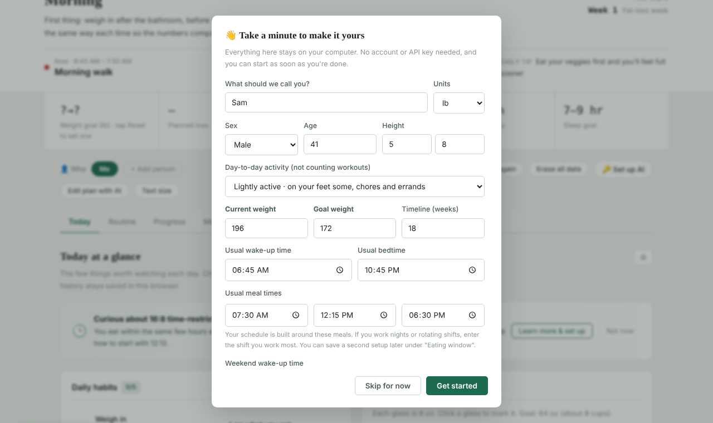
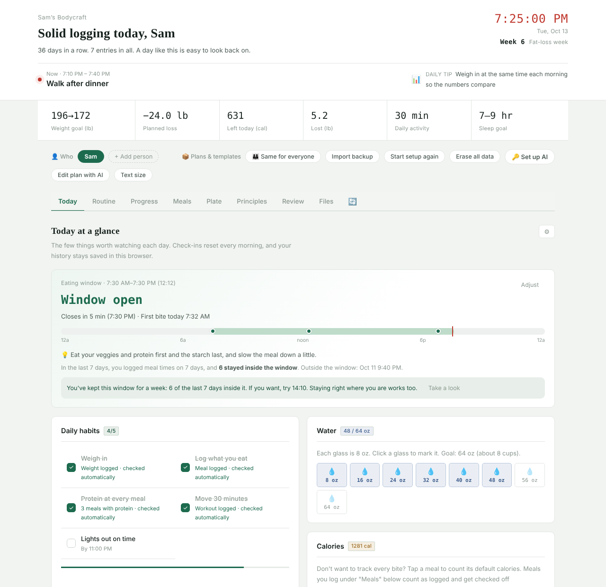
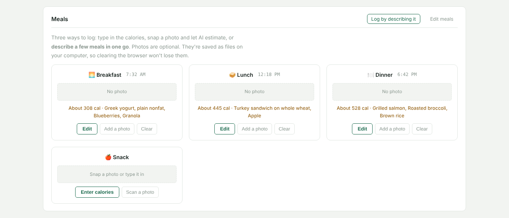
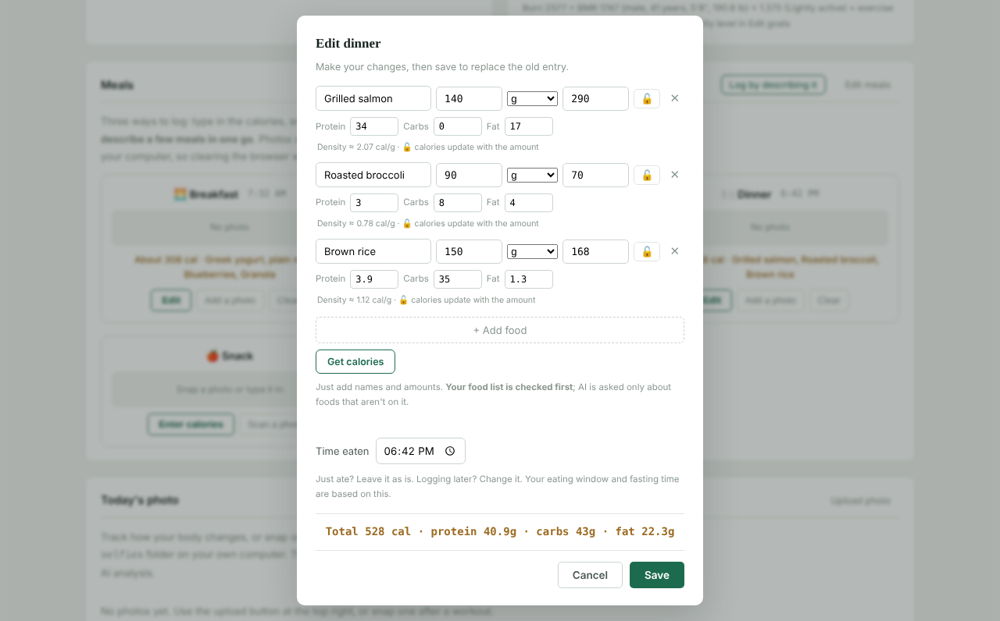
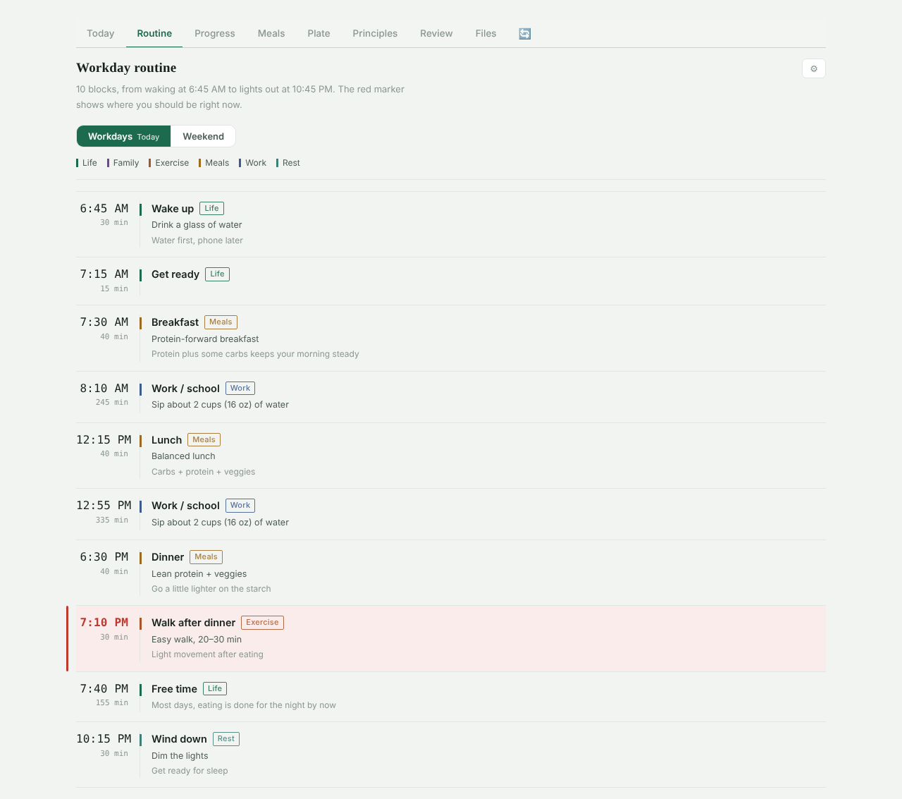
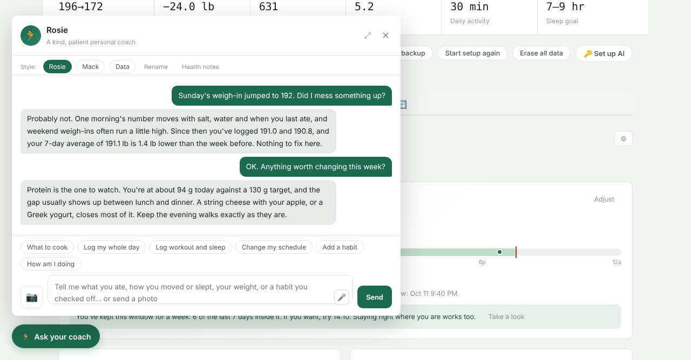
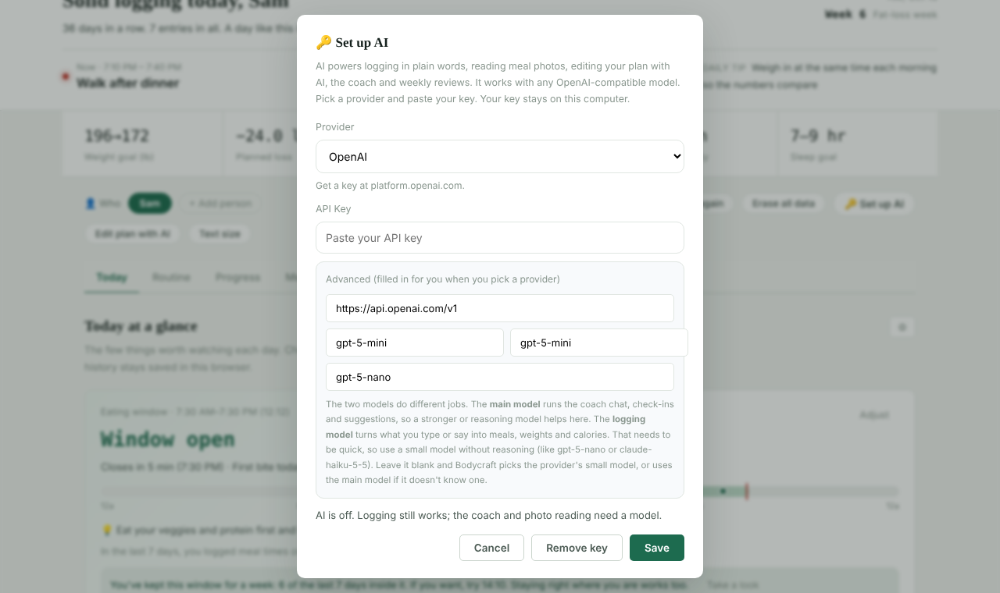
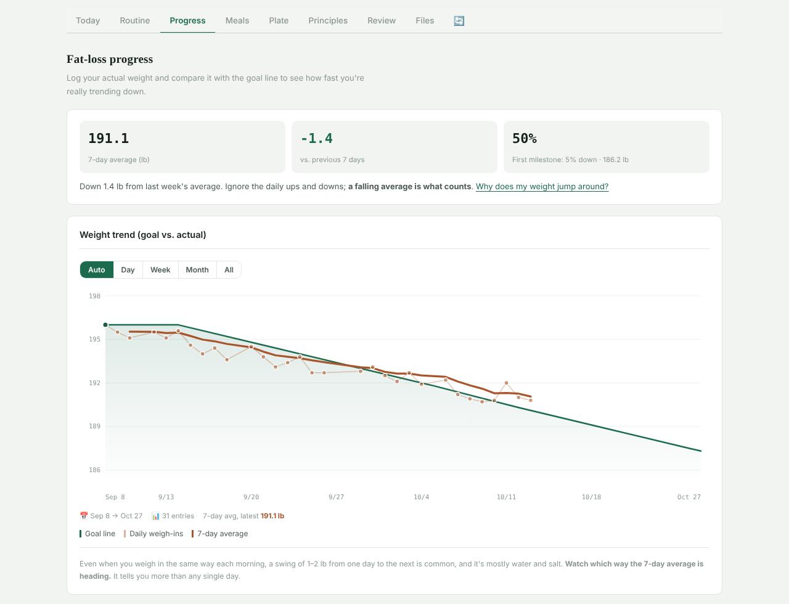

Contents
- What Bodycraft is
- Install and first launch
- First-run setup
- A day with Bodycraft
- Talking to the coach
- Setting up AI
- The eating window
- Progress and 7-day averages
- Reviews, share cards and export
- Households
- Your data and privacy
- Backups and upgrading
- Uninstalling and starting over
- Troubleshooting
- Health disclaimer
01What Bodycraft is
Bodycraft helps you lose fat at a gentle, steady pace by making the everyday parts easy to keep up with: what to do right now, what you ate, whether you moved, how you slept, and which way your weight is really heading.
It is a small program that runs on your computer and opens in a browser window. There is no account to create, no subscription and no cloud service. Your records are ordinary files in the Bodycraft folder.
What it does
- Lays out your day in time blocks and shows where you are now
- Tracks weigh-ins, meals, protein, water, workouts, sleep and notes
- Builds a week-by-week plan toward your goal weight
- Shows 7-day weight averages so daily swings don't mislead you
- Offers a chat coach and photo meal logging if you add an AI provider
What it isn't
- Medical, nutrition or exercise advice
- A replacement for your doctor or a registered dietitian
- A diet with foods you must or must not eat
- A website or app store app: nothing is uploaded unless you turn on AI
Calorie numbers, meal ideas, goal weights and coach replies are general information and estimates. If you have a health condition, take medication, are pregnant or breastfeeding, are under 18, or feel a loss of control around food, talk with a health professional before using the plan features. See the health disclaimer.
02Install and first launch
Before you start: Python
Bodycraft is written in Python and needs Python 3.9 or newer. It uses only what comes with Python, so there is nothing else to install. To check whether you already have it, open a terminal (Command Prompt on Windows) and type python3 --version (on Windows, py --version).
If you need Python, download it from python.org/downloads. On Windows, leave tcl/tk and IDLE checked in the installer; the optional desktop shortcut and reminder bar need it.
Get the files
Unzip Bodycraft into a folder you'll keep, for example a Bodycraft folder in your home folder. This folder is where your records will live, so avoid temporary places like your Downloads folder.
Windows Windows 10 and 11
- Open the Bodycraft folder and double-click
start.py. - If Windows asks which program to use, pick Python. Or open Command Prompt in the folder and run
py start.py. - Bodycraft starts its small background server and opens in its own window.
macOS
- Open Terminal (in Applications → Utilities).
- Type
cd(with a space), drag the Bodycraft folder onto the Terminal window, and press Return. - Run
python3 start.py. You can close Terminal once Bodycraft is open.
Double-clicking a .py file on a Mac usually opens it in a text editor instead of running it. For a double-click icon, use the optional installer below.
Linux
- Open a terminal in the Bodycraft folder.
- Run
python3 start.py.
What happens when it starts
start.py makes sure the Bodycraft server is running, then opens the app. If you have Chrome, Edge, Brave or Chromium, it opens as a clean app window without tabs or an address bar; otherwise it opens in your default browser.
The app's address is http://127.0.0.1:8765/. If something else on your computer already uses port 8765, Bodycraft quietly moves to the next free port, up to 8776. You never need to type the address yourself.
The server keeps running in the background after you close the window, so reopening is instant. It only accepts connections from your own computer.
Want the address without a window opening? Run python3 start.py --no-browser (or set the environment variable BODYCRAFT_NO_BROWSER=1). Bodycraft prints the address and you can open it in any browser.
Optional: desktop icon and start at login
Run install.py the same way you ran start.py. It adds a shortcut so you don't need the terminal again:
| System | What install.py creates | Starts at login |
|---|---|---|
| Windows | A Bodycraft shortcut on your desktop | The background server and the desktop reminder bar (set up automatically) |
| macOS | Bodycraft.command on your Desktop. The first time, right-click it and choose Open. | The background server, if you answer y when asked |
| Linux | A Bodycraft entry in your app menu, plus a desktop icon if you have a Desktop folder | The background server, if you answer y when asked |
Nothing opens a browser window at login. Only the quiet background server (and on Windows the reminder bar) starts.
The reminder bar
The reminder bar is a small card that sits at the edge of your screen and nudges you at key times in your routine. Drag it to the left or right edge and it tucks away; hover to slide it out, double-click to open Bodycraft, right-click to quit. To turn it on or off, run widget_toggle.py. It needs Python's tkinter (on Linux, the python3-tk package).
03First-run setup
The first time Bodycraft opens, it asks a few questions so the plan, calorie estimates and daily routine fit you. It takes about a minute, needs no account and no AI key, and stays on your computer.

- Name and units. Choose lb or kg. With pounds, height is entered in feet and inches.
- Sex, age and height. Optional, but they make your resting-calorie estimate much more accurate, and height lets Bodycraft check that your goal weight isn't too low.
- Day-to-day activity. How active you are outside of workouts (desk job, on your feet, physical job). Workouts are logged separately.
- Current weight, goal weight and timeline. As you type, the box at the bottom tells you the weekly pace and whether it is gentle or fast. If the pace is faster than about 1% of your body weight per week, Bodycraft suggests a longer timeline and uses it when you save. Goals below a healthy weight for your height are refused, and Bodycraft doesn't build fat-loss plans for anyone under 18.
- Wake-up time, bedtime and meal times. Your daily routine is built around these. If you enter a different weekend wake-up time, you also get a separate weekend routine for Saturday and Sunday.
- Start date. Usually today.
Click Get started to build your plan, or Skip for now to look around first. You can redo it any time with Start setup again in the row of buttons above the tabs. Redoing setup rebuilds your weekly plan; weights and notes you've logged stay.
For goals of about 20 lb or more, aim for the first 5% of your starting weight before worrying about the rest. Bodycraft marks it as your first milestone because many health markers tend to improve around that point.
04A day with Bodycraft
Most days you only need the Today tab. Open it in the morning, glance at it during the day, and log things as they happen or all at once in the evening.

The top of the page
- Now. The current block from your routine, with the time it covers. The red clock and week number are on the right.
- The stats row. Goal weight, planned loss, Left today (calories you have left in today's budget; click it to see how it's calculated), how much you've lost so far, your daily activity goal and your sleep goal.
- Buttons above the tabs. Switch or add people, Set up AI, Edit plan with AI, Text size (click to cycle through larger text), Import backup, Start setup again and Erase all data.
Weigh in
Weigh yourself in the morning, after the bathroom and before eating or drinking, the same way each time. Log it on the Progress tab under Log weight: pick the date, type the number, click Log it. Click the calendar button to see which days already have a weigh-in. Daily or weekly both work.
Daily habits
Five simple habits are set up for you: Weigh in, Log what you eat, Protein at every meal, Move 30 minutes and Lights out on time. Click one to check it off. Several check themselves off automatically when the matching thing is logged, for example Weigh in after you log today's weight. A habit with minutes in it, like Move 30 minutes, also adds a workout when you check it.
To change the list, click the gear button next to Today at a glance and choose Edit check-ins, or just tell the coach, for example "Add a daily check: stretch for 10 minutes before bed." Check-ins start fresh every morning.
Water
Click a glass to fill up to it; click the last filled glass to undo one. The default goal is 64 oz in 8 oz glasses. You can change both under Edit daily goals in the same gear menu, along with your daily calorie and protein targets.
Meals
Bodycraft gives you four meal slots (Breakfast, Lunch, Dinner, Snack). You can rename them or add more with Edit meals. There are three ways to log a meal.

Type it in
Click Enter calories. Add foods with an amount and unit (grams, oz, cup, slice, each and more), then click Get calories. Foods already in your calorie list are filled in on your computer; only new foods need AI. Just want a total? Leave the name blank and type the calories.
Snap a photo
Click Scan a photo. With AI set up, it lists the foods it sees with estimated calories and macros for you to check and fix. Without AI, the photo is still saved and you type the numbers. iPhone HEIC photos need to be exported as JPG first.
Describe it
Click Log by describing it and write something like "Two scrambled eggs and coffee for breakfast, a turkey sandwich and an apple for lunch." Click Estimate, check the list, and save. Needs AI.

Two details make the numbers more useful:
- Time eaten. Bodycraft fills in the current time. If you're logging later, change it. The eating window and fasting time on the Today tab are based on it.
- Protein, carbs and fat. When a meal has food details, the Calories card shows how much protein each meal had and how close you are to today's protein, carb and fat targets. The protein target is about 0.7 g per lb of body weight unless you set your own under Edit daily goals.
Don't want to track every bite? In the Calories card, click a meal to count it at a default amount (350 calories for breakfast, 500 for lunch, 600 for dinner and 200 for a snack, all editable).
Every food you look up is saved to My calorie list on the Plate tab, so it comes back instantly next time without AI. The Plate tab also has a calorie calculator and tips for judging portions without a scale. With AI set up, the Meals tab suggests dishes from what's in your kitchen or what you're in the mood for, and you can save the ones you like under My recipes.
Workouts
In the Activity and sleep card, pick a type (Walk, Run, Bike, Swim, Strength, Yoga, Hike or Other), enter the minutes, choose Light, Moderate or Vigorous, and click Log it. Bodycraft estimates the calories and lets you change the number before saving. Workouts count toward today's calories out.
Sleep and naps
Enter last night's bedtime and wake-up time, pick how well you slept, and click Log it. Naps are logged separately below it, by start and end time or by minutes.
Daily notes and progress photos
Daily notes is a simple journal: how the day went, what was hard, what you noticed. Use History to look back. Today's photo keeps progress pictures in the selfies folder; they are never uploaded and never sent to AI.
Your routine
The Routine tab shows your day as time blocks built from your setup answers. The red marker shows the current block.

The gear menu on this tab has Edit time blocks, Rebuild from wake-up and meal times and Edit categories (the color-coded block types).
05Talking to the coach
Click Ask your coach in the bottom-left corner. You can write the way you'd text a friend; the coach works out whether you're asking a question, logging something or asking to change a setting.

What it can do
- Answer questions about your progress, a plateau, a hard day or what to eat, using your actual numbers.
- Log for you. Try "Weight 190.8, breakfast was 2 eggs and a slice of toast, walked 30 minutes, slept 11:30 pm to 7 am." It turns that into a list for you to check, then saves it.
- Read a photo. Click the camera button (or paste an image) to send a meal photo, or a screenshot of a log from another app.
- Change settings. "Move dinner to 6:30 pm" or "Add a habit" opens a preview of the change. Nothing changes until you approve it, and there's an Undo button afterward.
The example buttons above the message box fill in a sample message you can edit.
Three coaching styles
Rosie
Kind and patient. Points out the good changes you might have missed and encourages you with specifics.
Mack
A blunt, funny friend who calls out excuses. Teases the habit, never your body.
Data
A calm analyst. Sticks to trends, numbers and one clear takeaway.
Switch styles with the buttons at the top of the panel. Rename lets you give them your own names. Health notes is where you can note things like medications or lab results once, so the coach takes them into account. The expand button next to the close button makes the panel larger.
The coach needs AI to be set up. Without it, the panel still shows a summary of what you've logged today and links to the guides on the Principles tab. Coach replies are general information from an AI model and can be wrong.
06Setting up AI
AI is optional. It powers the coach, photo and plain-language meal logging, meal ideas, calorie lookups for new foods, Edit plan with AI and written reviews. Bodycraft works with any service that offers an OpenAI-compatible API, including a model running on your own computer.

- Create an API key with your chosen provider (links below). Most providers ask you to add a payment method first.
- In Bodycraft, click Set up AI.
- Choose the provider, paste the key into API Key, and click Save.
| Provider | Key | Main model it fills in | Where to get a key |
|---|---|---|---|
| OpenAI | Yes | gpt-5-mini | platform.openai.com |
| Anthropic Claude | Yes | claude-sonnet-5-5 | console.anthropic.com |
| Google Gemini | Yes | gemini-2.5-flash | aistudio.google.com |
| OpenRouter | Yes (one key for many providers) | openai/gpt-5-mini | openrouter.ai |
| Ollama (runs on your computer) | No | llama3.2, with llama3.2-vision for photos | Install from ollama.com, then pull the models |
| Custom (OpenAI-compatible) | Usually | You fill in the base URL and model | Your service's documentation |
Two models, two jobs. The main model runs the coach and suggestions. A smaller, faster "logging" model turns what you type into meals, weights and calories. If you leave the logging model blank, Bodycraft picks the provider's small model for you (for example gpt-5-nano or claude-haiku-5-5).
Ollama: install Ollama, run ollama pull llama3.2 (and ollama pull llama3.2-vision if you want photo reading), make sure Ollama is running, then choose Ollama in Bodycraft and click Save without a key. Nothing leaves your computer, but answers may be slower and less accurate than the cloud models.
Bodycraft is free and has no account. AI requests are billed by your provider to your own provider account, at that provider's prices. Light daily use of a small model usually costs little, but check your provider's pricing page and consider setting a monthly spending limit there.
What works without AI
Everything you log by hand works without a key: weigh-ins, habits, water, meals by calories or from foods already in your calorie list, workouts, sleep, notes, progress photos, the routine, the eating window, the progress chart, the Last 7 days summary, share cards and CSV export. To turn AI off again, open Set up AI and click Remove key.
07The eating window (optional)
Time-restricted eating means eating all your meals within the same few hours each day, with only water, black coffee or plain tea outside them. 16:8 means a 16-hour overnight fast and an 8-hour eating window. Its main benefit is cutting out late-night snacking. In studies, people lost about as much as those who cut the same calories without a time limit, so use it only if it makes eating less easier for you.
- Turn it on from the card on the Today tab (Learn more & set up), or from Eating window settings on the Progress tab.
- Pick a level: 12:12 (starter: no eating after dinner), 14:10 or 16:8. Bodycraft doesn't offer anything shorter than an 8-hour window.
- Choose when it starts. A daytime window with an earlier dinner fits most schedules.
- If a health reason on the checklist applies to you (pregnancy, diabetes medication, a history of eating disorders and others), Bodycraft won't start a window and suggests checking with your doctor.
Once it's on, the Today card shows whether the window is open, how long you've been fasting, your meals as dots on a 24-hour bar, and how many of the last 7 days stayed inside the window. After a steady week it may suggest trying the next level; staying where you are is fine too. Shift workers can save a second window and switch between them with one click.
If you feel shaky, dizzy or your heart races while fasting, eat something, and talk with your doctor.
08Progress and 7-day averages
Body weight can swing 1 to 2 lb from one morning to the next, mostly from water and salt, even when you weigh in exactly the same way. That's why the Progress tab leads with averages instead of single days.

- 7-day average and vs. previous 7 days: the clearest sign of which way you're heading. Each needs at least 3 weigh-ins in its 7 days.
- First milestone: how far you are toward losing your first 5%.
- The chart: switch between Auto, Day, Week, Month and All. Hover a point to see its value.
- Adjust weekly goal weight: change any week's goal if your plan needs to bend.
- When you ate · last 2 weeks: each row is a day's eating, from first bite to last.
- Week-by-week plan: each week's goal with an activity and food focus.
When your plan's end date passes, the Today tab offers Start next plan, which runs setup again from your current weight.
09Reviews, share cards and export
The Review tab looks back at what you've kept up with: days logged, current weight, total lost, exercise this week, badges, and plain-language explanations of your numbers (BMI, goal progress, recent pace, logging streak, workout days and average sleep).
Last 7 days
A quick weekly summary built only from your logs. No AI needed.
Write a review
Pick a date range and an AI writes a review with a badge wall and your photos. Choose whether it may read your daily notes. Save it with Save as HTML to keep, print or send to family.
Make a share card
A card about your consistency, such as how long you've kept going and how many workouts you've done. It never shows your current weight, height, name, photos or notes. You can add a goal for the coming week and, if you choose, the total amount you've lost. It opens in a new tab; take a screenshot to share it.
Export data (CSV)
Downloads bodycraft_export.csv with one row per day: weight in lb and kg, workouts, sleep, calories in and out, meal times, and protein, carbs and fat. Opens in Excel, Numbers or Google Sheets.
10Households: more than one person
Several people can share one Bodycraft on the same computer. Click + Add person next to Who, answer a short setup for them, and they get their own plan. Click a name to switch. Each person has their own weigh-ins, meals, workouts, sleep, notes, check-ins and photos.
The Same for everyone button decides whether plans and templates (routine, habits, meal ideas, principles) are shared by the whole household or kept Per person. Click it to switch.
Everyone in the household can see everyone's records, since they live in the same folder on the same computer. If someone wants privacy, they can keep their own copy of Bodycraft in a separate folder or user account.
11Where your data lives and privacy
Everything is stored locally, in the Bodycraft folder. The server listens only on your own computer (127.0.0.1), so other devices on your network can't reach it, and it refuses requests from other websites open in your browser.
| In the Bodycraft folder | What it holds |
|---|---|
data.json | People, weigh-ins, weekly goals, workouts, sleep and naps |
content.json | Your profile, plan, routine, habits, meal slots, eating window and other settings |
photos.json and photos/ | Logged meals (foods, calories, times) and meal photos |
diary.json | Daily notes |
selfies.json and selfies/ | Progress photos |
attach.json and files/ | Files you keep on the Files tab, such as lab results |
food_lookup.jsonfavorites.jsonknowledge.json | Your calorie list, saved recipes, and eating methods you taught the coach |
api_config.json | Your AI provider and key, in plain text. Treat it like a password. |
backups/ | Automatic snapshots taken before each change |
Your browser also keeps a few small things for each person: habit check-ins, water glasses, badges and display preferences such as text size. Browsers store these by address, so they belong to the address Bodycraft runs on (for example 127.0.0.1:8765) and to that browser. Clearing that site's data in your browser removes them.
What leaves your computer
Only AI requests, and only to the provider you chose. If you never set up AI, nothing leaves your computer. When you use an AI feature, Bodycraft sends what that feature needs, for example:
- your message to the coach, the recent conversation, your recent weigh-ins, today's meals, workout and sleep, your profile basics (name, sex, age, height, plan), your health notes, and today's note
- a meal photo, when you ask it to read one
- the date range of logs (and your notes, if you allow it) when you ask for a written review
Progress photos are never sent. With Ollama, AI requests stay on your computer too. How your provider handles the data is covered by that provider's own privacy policy.
12Backups, moving and upgrading
Automatic snapshots
Before saving a change, Bodycraft copies the previous version of your data, settings, meals, notes and file list into the backups folder, keeping the most recent ones. If something goes wrong, you can copy a snapshot back (rename it to the original file name, such as data.json, while Bodycraft is closed).
Your own backup
The simplest backup is a copy of the whole Bodycraft folder, for example to an external drive or a cloud-synced folder. That copy includes everything except the browser-held check-ins described above.
Moving to a new computer
Copy the whole folder to the new computer and start it as usual. Or, on a fresh install, use Import backup and pick data.json and content.json from the old folder. Import replaces matching content (your current data is backed up first). Photos and stored files are copied by hand: the photos, selfies and files folders.
Upgrading to a new version
- Close the Bodycraft window.
- Unzip the new version over the old folder and let it replace the files. New versions don't include any data files, so your records are kept.
- Open Bodycraft the usual way.
start.pynotices that the running server is older and restarts it with the new version.
If you see a banner saying the server is still running an older version, see Troubleshooting.
13Uninstalling and starting over
Uninstall
Run uninstall.py. It stops Bodycraft's background processes, removes the shortcuts and login items that install.py created, and then asks whether to clear your data too. Your data is kept unless you type y; even then it's moved into an uninstall-backup_ folder rather than deleted. After that, delete the Bodycraft folder. Bodycraft doesn't install system services; apart from the shortcuts, everything it uses is inside its own folder.
To remove the browser-held check-ins as well, clear the site data for 127.0.0.1 in your browser.
Start over without uninstalling
- Erase all data in the app clears your logs (backed up first) and the check-ins in your browser. Your routine, recipes, habit list and API key stay.
reset_data.pyoffers three levels, from clearing just your records up to clearing settings and your API key. Everything is backed up first. It can't reach your browser, so click Erase all data in the app as well.
14Troubleshooting
- Nothing happens when I double-click start.py
- Your computer may not know to open
.pyfiles with Python. Open a terminal in the Bodycraft folder and runpython3 start.py(Windows:py start.py). If that says Python isn't found, install it from python.org. On a Mac, runinstall.pyonce to get a double-clickableBodycraft.command. - The browser window didn't open
- Run
python3 start.py --no-browser. It prints the address, such ashttp://127.0.0.1:8765/; paste it into any browser. Bookmarking it is fine. - "Port in use" or "Ports 8765–8776 are all in use"
- Bodycraft uses port 8765, or the next free one up to 8776 if another program has it, so a single busy port isn't a problem. If all twelve are busy, Bodycraft can't start its server and opens a limited offline version that keeps entries only in your browser. Close other programs or restart your computer, then open Bodycraft again. On macOS and Linux, details are in the
.server.logfile in the folder. - A banner says the server is running an older version
- This appears right after an upgrade if the old background server is still running. Close the window and open Bodycraft again with
start.pyor your desktop icon; it restarts the server with the new version. If the banner stays, runbodycraft_server.pyfrom the folder (as the banner suggests), or log out and back in. - "AI isn't set up yet"
- Click Set up AI and add a provider. Manual logging works in the meantime.
- AI errors or no reply
-
- Check that the key was pasted completely and belongs to the provider you picked.
- Make sure your provider account has billing set up and hasn't hit a spending limit.
- If you changed the model names under Advanced, check them against your provider's model list, or pick the provider again to restore the defaults.
- For Ollama, make sure Ollama is running and the models are pulled.
- Photo reading needs a model that can see images (the vision model).
- My photo won't upload
- HEIC photos (the iPhone default) can't be read. Export the photo as JPG, or on your iPhone go to Settings → Camera → Formats and choose Most Compatible. Photos must be under 15 MB.
- My check-ins or water glasses disappeared
- These are kept by your browser for the address Bodycraft runs on. They won't show if you open Bodycraft in a different browser, after clearing browsing data, or if Bodycraft is running on a different port than before. Your weigh-ins, meals and other records in the folder are not affected.
- Windows says the folder is in use when I try to delete it
- Run
uninstall.pyfirst so the background server stops, close the Bodycraft window, and make sure File Explorer isn't showing the folder. - On macOS, the server doesn't start at login
- macOS privacy settings can block login items from reading the Desktop, Documents and Downloads folders. Move the Bodycraft folder to your home folder and run
install.pyagain.
15Health disclaimer
Bodycraft is a personal tracking and reminder tool. Its routines, meal ideas, calorie numbers, goal weights and AI feedback are general information only. They are not medical, nutrition or exercise advice and don't replace the judgment of a doctor, registered dietitian or other qualified professional.
- Calorie estimates, especially from photos, are rough and can be far off. Use them as a reference.
- If you have a health condition, take medication, are pregnant or breastfeeding, are under 18, or feel strong anxiety or a loss of control around food or weight, talk with a health professional before using the plan features.
- A slower, steadier pace is easier to sustain. Bodycraft flags goals that are clearly too fast or too low, but you remain responsible for your own health decisions.
- If you have chest pain, fainting, or other urgent symptoms, contact a doctor or emergency services.